<title>MyContent Studios</title>
<meta name="claude:viewport-fit-sides" content="cover">
<link rel="preconnect" href="https://fonts.googleapis.com">
<link rel="stylesheet" href="https://fonts.googleapis.com/css2?family=Inter:wght@400;500;600&family=Inter+Tight:wght@500;600&family=JetBrains+Mono:wght@400;500&display=swap">
<style>
/* Layout: a case study set on the app's own white canvas, with one full-bleed band in the app's dark terminal colours
   for the live-run moment. Screens sit in a plain browser frame, the way the app is used. */
:root{
  --canvas:#fafaf9; --surface:#ffffff; --inset:#f6f6f4; --line:#e8eaee;
  --ink:#0f172a; --ink2:#334155; --muted:#64748b; --faint:#94a3b8;
  --primary:#1976D2; --primary-ink:#ffffff; --pip:#29ABE2;
  --term:#0d1117; --term2:#161b22; --term-line:#21262d; --term-text:#c9d1d9; --term-dim:#6e7681; --term-ok:#3fb950; --term-run:#e3b341;
  --blue-bg:#e3ecfb; --blue:#2457a8; --or-bg:#fbe5d4; --or:#9a4512; --vi-bg:#ebe7fb; --vi:#4b3db0;
  --red-bg:#f8dfe0; --red:#9b2323; --am-bg:#f8e8bf; --am:#7a4f0a; --em-bg:#dff1da; --em:#2f7a2b;
  --shadow:0 1px 2px rgba(15,23,42,.05),0 12px 40px -12px rgba(15,23,42,.18);
  --f-display:"Inter Tight","Inter",ui-sans-serif,system-ui,"Segoe UI",sans-serif;
  --f-body:"Inter",ui-sans-serif,system-ui,"Segoe UI",sans-serif;
  --f-mono:"JetBrains Mono",ui-monospace,"Cascadia Code",Consolas,monospace;
}
@media (prefers-color-scheme:dark){:root:not([data-theme="light"]){
  --canvas:#0e1116; --surface:#151a21; --inset:#1b2129; --line:#262d37;
  --ink:#e8edf3; --ink2:#c3ccd7; --muted:#8d99a8; --faint:#66717f;
  --primary:#4a9bf0; --primary-ink:#0b1320;
  --blue-bg:#1d2b45; --blue:#9cc0f5; --or-bg:#3a261a; --or:#f0b48a; --vi-bg:#29244a; --vi:#bdb2f5;
  --red-bg:#3c1f22; --red:#f0a3a3; --am-bg:#3a2f15; --am:#ecc874; --em-bg:#1d3320; --em:#9bd894;
  --shadow:0 1px 2px rgba(0,0,0,.3),0 16px 40px -12px rgba(0,0,0,.6); color-scheme:dark}}
:root[data-theme="dark"]{
  --canvas:#0e1116; --surface:#151a21; --inset:#1b2129; --line:#262d37;
  --ink:#e8edf3; --ink2:#c3ccd7; --muted:#8d99a8; --faint:#66717f;
  --primary:#4a9bf0; --primary-ink:#0b1320;
  --blue-bg:#1d2b45; --blue:#9cc0f5; --or-bg:#3a261a; --or:#f0b48a; --vi-bg:#29244a; --vi:#bdb2f5;
  --red-bg:#3c1f22; --red:#f0a3a3; --am-bg:#3a2f15; --am:#ecc874; --em-bg:#1d3320; --em:#9bd894;
  --shadow:0 1px 2px rgba(0,0,0,.3),0 16px 40px -12px rgba(0,0,0,.6); color-scheme:dark}

*{box-sizing:border-box}
body{background:var(--canvas);color:var(--ink);font:400 16px/1.6 var(--f-body);-webkit-font-smoothing:antialiased}
img{max-width:100%;display:block}
a{color:var(--primary)}
.wrap{max-width:1200px;margin:0 auto;padding-left:max(16px,env(safe-area-inset-left,0px));padding-right:max(16px,env(safe-area-inset-right,0px))}
section{padding-block:clamp(56px,9vw,112px)}
h1,h2,h3{font-family:var(--f-display);font-weight:600;text-wrap:balance;margin:0;letter-spacing:-.02em}
h2{font-size:clamp(28px,4vw,44px);line-height:1.08}
h3{font-size:20px;line-height:1.25;letter-spacing:-.01em}
p{margin:0}
.eyebrow{font:500 12px/1 var(--f-mono);letter-spacing:.08em;text-transform:uppercase;color:var(--muted)}
.lede{font-size:clamp(17px,1.6vw,19px);color:var(--ink2);max-width:62ch}
.mono{font-family:var(--f-mono)}
.head{display:grid;gap:14px;margin-bottom:clamp(32px,5vw,56px);max-width:760px}

/* top bar, as in the app */
.bar{position:sticky;top:env(safe-area-inset-top,0px);z-index:5;background:color-mix(in srgb,var(--surface) 90%,transparent);backdrop-filter:blur(8px);border-bottom:1px solid var(--line)}
body::before{content:"";position:fixed;inset:0 0 auto;height:env(safe-area-inset-top,0px);z-index:10;background:var(--surface)}
.bar .wrap{display:flex;align-items:center;gap:12px;height:56px}
.mark{position:relative;width:30px;height:30px;border-radius:9px;background:#0C1311;flex:none;overflow:hidden}
.mark::after{content:"";position:absolute;left:11px;bottom:5px;width:8px;height:2px;border-radius:1px;background:var(--pip)}
.mark i{position:absolute;inset:6px 7px 10px;border-radius:50%;border:2px solid #5fd3a8;opacity:.9}
.bar b{font-weight:500;font-size:15px}
.bar nav{margin-left:auto;display:flex;gap:4px;overflow-x:auto}
.bar nav a{font-size:13.5px;font-weight:500;color:var(--muted);text-decoration:none;padding:6px 10px;border-radius:7px;white-space:nowrap}
.bar nav a:hover{background:var(--inset);color:var(--ink)}
@media (max-width:720px){.bar nav{display:none}}

/* hero */
.hero{padding-block:clamp(48px,8vw,96px) 0}
.hero-grid{display:grid;gap:28px}
.hero h1{font-size:clamp(44px,8.4vw,104px);line-height:.96;letter-spacing:-.045em}
.hero h1 span{color:var(--primary)}
.hero .lede{font-size:clamp(18px,2vw,22px)}
.chips{display:flex;flex-wrap:wrap;gap:8px}
.pill{display:inline-flex;align-items:center;gap:6px;border-radius:999px;padding:3px 11px;font-size:13px;font-weight:500;line-height:22px}
.pill::before{content:"";width:6px;height:6px;border-radius:50%;background:currentColor;opacity:.8}
.t-blue{background:var(--blue-bg);color:var(--blue)}.t-or{background:var(--or-bg);color:var(--or)}.t-vi{background:var(--vi-bg);color:var(--vi)}
.t-red{background:var(--red-bg);color:var(--red)}.t-am{background:var(--am-bg);color:var(--am)}.t-em{background:var(--em-bg);color:var(--em)}
.facts{display:flex;flex-wrap:wrap;gap:12px 32px;padding-top:8px;border-top:1px solid var(--line);margin-top:8px}
.facts div{display:grid;gap:2px;min-width:0}
.facts b{font:600 26px/1.1 var(--f-display);letter-spacing:-.02em;font-variant-numeric:tabular-nums}
.facts span{font-size:13px;color:var(--muted)}
.hero-shot{margin-top:clamp(36px,6vw,64px)}

/* browser frame */
.frame{border-radius:14px;background:var(--surface);border:1px solid var(--line);box-shadow:var(--shadow);overflow:hidden;max-width:100%}
.frame .chrome{display:flex;align-items:center;gap:7px;height:34px;padding:0 12px;border-bottom:1px solid var(--line);background:var(--inset)}
.frame .chrome i{width:10px;height:10px;border-radius:50%;background:var(--line)}
.frame .chrome span{margin-left:10px;flex:1;min-width:0;max-width:340px;height:20px;border-radius:6px;background:var(--surface);border:1px solid var(--line);font:400 11.5px/18px var(--f-mono);color:var(--muted);padding:0 8px;white-space:nowrap;overflow:hidden;text-overflow:ellipsis}
.frame img{width:100%;height:auto}

/* problem */
.problem{display:grid;grid-template-columns:repeat(auto-fit,minmax(min(100%,300px),1fr));gap:20px}
.before,.after{border-radius:14px;padding:24px;display:grid;gap:14px;align-content:start;min-width:0}
.before{background:var(--inset)}
.after{background:var(--surface);border:1px solid var(--line)}
.before ul,.after ul{margin:0;padding:0;list-style:none;display:grid;gap:10px}
.before li,.after li{display:grid;grid-template-columns:18px 1fr;gap:10px;font-size:15px;color:var(--ink2)}
.before li::before{content:"—";color:var(--faint)}
.after li::before{content:"✓";color:var(--em);font-weight:600}
.who{display:grid;grid-template-columns:repeat(auto-fit,minmax(min(100%,240px),1fr));gap:20px;margin-top:40px}
.who div{display:grid;gap:6px;padding-top:16px;border-top:2px solid var(--ink)}
.who p{color:var(--muted);font-size:15px}

/* pipelines strip */
.pipes{display:grid;grid-template-columns:repeat(auto-fit,minmax(min(100%,250px),1fr));gap:12px;margin-top:40px}
.pipe{background:var(--surface);border:1px solid var(--line);border-radius:12px;padding:16px;display:grid;gap:8px;min-width:0}
.pipe .ico{width:32px;height:32px;border-radius:9px;display:grid;place-items:center}
.pipe .ico svg{width:17px;height:17px;fill:none;stroke:currentColor;stroke-width:1.9;stroke-linecap:round;stroke-linejoin:round}
.pipe p{font-size:14px;color:var(--muted)}
.pipe .out{font:400 11.5px/1.5 var(--f-mono);color:var(--faint);word-break:break-word}

/* features */
.feature{display:grid;grid-template-columns:minmax(0,5fr) minmax(0,7fr);gap:clamp(24px,5vw,64px);align-items:center;padding-block:clamp(28px,4vw,48px)}
.feature+.feature{border-top:1px solid var(--line)}
.feature.flip .copy{order:2}
.feature .copy{display:grid;gap:14px;min-width:0}
.feature .copy p{color:var(--ink2)}
.feature .copy ul{margin:0;padding:0;list-style:none;display:grid;gap:8px;font-size:15px;color:var(--ink2)}
.feature .copy li{padding-left:16px;position:relative}
.feature .copy li::before{content:"";position:absolute;left:0;top:.68em;width:6px;height:2px;background:var(--primary)}
.quote{font:400 13.5px/1.5 var(--f-mono);background:var(--inset);border-radius:8px;padding:10px 12px;color:var(--ink2)}
@media (max-width:860px){.feature{grid-template-columns:1fr}.feature.flip .copy{order:0}}

/* terminal band */
.band{background:var(--term);color:var(--term-text)}
.band .eyebrow{color:var(--term-dim)}
.band h2{color:#f0f6fc}
.band .lede{color:#9aa6b2}
.band-grid{display:grid;grid-template-columns:minmax(0,1fr) minmax(0,1.25fr);gap:clamp(24px,5vw,56px);align-items:start}
@media (max-width:900px){.band-grid{grid-template-columns:1fr}}
.term{border:1px solid var(--term-line);border-radius:14px;background:var(--term2);overflow:hidden;min-width:0}
.term .tb{display:flex;align-items:center;gap:7px;height:36px;padding:0 14px;border-bottom:1px solid var(--term-line);font:400 12.5px var(--f-mono);color:var(--term-dim)}
.term .tb i{width:10px;height:10px;border-radius:50%}
.term .tb i:nth-child(1){background:#ff5f57}.term .tb i:nth-child(2){background:#febc2e}.term .tb i:nth-child(3){background:#28c840}
.term .tb span{margin-left:8px}
.log{padding:14px 16px;font:400 13px/1.7 var(--f-mono);overflow-x:auto}
.log div{display:grid;grid-template-columns:70px 16px minmax(0,1fr);gap:10px;white-space:nowrap}
.log .t{color:var(--term-dim)}
.log .k{color:var(--term-run)}
.log .ok{color:var(--term-ok)}
.steps{list-style:none;margin:28px 0 0;padding:0;display:grid;gap:0}
.steps li{display:grid;grid-template-columns:22px 1fr auto;gap:12px;align-items:center;padding:11px 0;border-bottom:1px solid var(--term-line);font-size:15px}
.steps li::before{content:"";width:18px;height:18px;border-radius:50%;background:var(--term-ok);box-shadow:inset 0 0 0 4px var(--term)}
.steps span{font:400 12.5px var(--f-mono);color:var(--term-dim);font-variant-numeric:tabular-nums}
.statrow{display:grid;grid-template-columns:repeat(3,minmax(0,1fr));gap:1px;background:var(--term-line);border:1px solid var(--term-line);border-radius:12px;overflow:hidden;margin-top:28px}
.statrow div{background:var(--term);padding:14px 16px;display:grid;gap:2px;min-width:0}
.statrow b{font:600 22px/1.2 var(--f-display);color:#f0f6fc;font-variant-numeric:tabular-nums}
.statrow span{font:500 11px var(--f-mono);letter-spacing:.06em;text-transform:uppercase;color:var(--term-dim)}
.band .frame{border-color:var(--term-line);background:var(--term2)}
.band .frame .chrome{background:var(--term2);border-color:var(--term-line)}
.band .frame .chrome i{background:var(--term-line)}
.band .frame .chrome span{background:var(--term);border-color:var(--term-line);color:var(--term-dim)}

/* flow */
.flow{list-style:none;margin:0;padding:0;display:grid;grid-template-columns:repeat(5,minmax(0,1fr));gap:12px;counter-reset:s}
@media (max-width:980px){.flow{grid-template-columns:repeat(2,minmax(0,1fr))}}
@media (max-width:520px){.flow{grid-template-columns:1fr}}
.flow li{counter-increment:s;background:var(--surface);border:1px solid var(--line);border-radius:12px;padding:18px;display:grid;gap:8px;align-content:start;min-width:0}
.flow li::before{content:counter(s);display:grid;place-items:center;width:28px;height:28px;border-radius:50%;background:var(--ink);color:var(--canvas);font:600 13px var(--f-mono)}
.flow b{font-weight:600;font-size:15.5px}
.flow p{font-size:14px;color:var(--muted)}
.flow code{font:400 12px var(--f-mono);color:var(--ink2);background:var(--inset);padding:1px 5px;border-radius:4px}

/* gallery */
.gallery{display:grid;grid-template-columns:repeat(6,minmax(0,1fr));gap:20px}
.gallery figure{margin:0;display:grid;gap:10px;min-width:0}
.gallery figcaption{font-size:14px;color:var(--muted)}
.gallery figcaption b{color:var(--ink);font-weight:500}
.g-a{grid-column:span 6}.g-b{grid-column:span 3}.g-c{grid-column:span 3}
.g-tall .frame{max-height:620px;overflow:hidden}
@media (max-width:760px){.g-b,.g-c{grid-column:span 6}}

/* ui kit */
.kit{display:grid;grid-template-columns:repeat(auto-fit,minmax(min(100%,340px),1fr));gap:20px}
.kit .card{background:var(--surface);border:1px solid var(--line);border-radius:14px;padding:22px;display:grid;gap:16px;align-content:start;min-width:0}
.swatches{display:grid;grid-template-columns:repeat(auto-fill,minmax(88px,1fr));gap:10px}
.sw{display:grid;gap:6px;font:400 11.5px/1.3 var(--f-mono);color:var(--muted)}
.sw i{height:52px;border-radius:10px;border:1px solid var(--line)}
.sw b{font:500 12.5px var(--f-body);color:var(--ink)}
.typespec{display:grid;gap:12px}
.typespec div{display:grid;grid-template-columns:72px 1fr;gap:12px;align-items:baseline;min-width:0}
.typespec span{font:400 11.5px var(--f-mono);color:var(--faint)}
.btns{display:flex;flex-wrap:wrap;gap:10px;align-items:center}
.k-btn{display:inline-flex;align-items:center;gap:7px;min-height:36px;padding:0 14px;border-radius:8px;font:500 14px var(--f-body);border:0;cursor:default}
.k-primary{background:var(--primary);color:var(--primary-ink)}
.k-outline{background:var(--surface);color:var(--ink);box-shadow:inset 0 0 0 1px var(--line)}
.k-ghost{background:transparent;color:var(--muted)}
.k-seg{display:inline-flex;padding:3px;border-radius:9px;background:var(--inset);gap:2px}
.k-seg span{padding:5px 12px;border-radius:7px;font:500 13.5px var(--f-body);color:var(--muted)}
.k-seg span.on{background:var(--surface);color:var(--ink);box-shadow:0 1px 2px rgba(15,23,42,.08),0 0 0 1px var(--line)}
.status{display:flex;flex-wrap:wrap;gap:8px}
.radii{display:flex;gap:14px;align-items:end}
.radii div{display:grid;gap:6px;justify-items:center;font:400 11.5px var(--f-mono);color:var(--muted)}
.radii i{width:56px;height:56px;border:1.5px solid var(--ink2);background:var(--inset)}

/* closing */
.next{display:grid;grid-template-columns:repeat(auto-fit,minmax(min(100%,260px),1fr));gap:16px}
.next div{border-top:1px solid var(--line);padding-top:16px;display:grid;gap:6px}
.next p{color:var(--muted);font-size:15px}
.tag{font:500 11px var(--f-mono);letter-spacing:.06em;text-transform:uppercase;color:var(--primary)}
footer{border-top:1px solid var(--line);padding-block:32px 48px;color:var(--muted);font-size:14px}
footer .wrap{display:flex;flex-wrap:wrap;gap:12px 32px;justify-content:space-between}
.note{font-size:13px;color:var(--faint);margin-top:14px}
:focus-visible{outline:2px solid var(--primary);outline-offset:2px}
@media (prefers-reduced-motion:no-preference){
  .hero-shot{animation:rise .8s cubic-bezier(.2,.7,.2,1) both .1s}
  @keyframes rise{from{transform:translateY(18px)}to{transform:none}}
}
</style>

<header class="bar">
  <div class="wrap">
    <span class="mark" aria-hidden="true"><i></i></span><b>MyContent Studios</b>
    <nav aria-label="Sections"><a href="#problem">Problem</a><a href="#features">Features</a><a href="#flow">Flow</a><a href="#screens">Screens</a><a href="#kit">UI kit</a></nav>
  </div>
</header>

<main>
<section class="hero">
  <div class="wrap hero-grid">
    <p class="eyebrow">Case study · Local web app · Oct 2026</p>
    <h1>One studio.<br>Six content <span>pipelines.</span></h1>
    <p class="lede">MyContent Studios turns a folder of AI content automations into one calm desk. Pick a pipeline, say how many, and watch Claude Code build the carousels and reels while you review what lands.</p>
    <div class="chips" aria-label="Pipelines">
      <span class="pill t-blue">Carousels</span><span class="pill t-or">Talking reels</span><span class="pill t-vi">Website reels</span><span class="pill t-red">Topic reels</span><span class="pill t-am">DM notices</span><span class="pill t-em">Company carousels</span>
    </div>
    <div class="facts">
      <div><b>6</b><span>pipelines, one launcher</span></div>
      <div><b>47</b><span>sessions opened in its first days</span></div>
      <div><b>18m 12s</b><span>for a 2-post, 20-slide run</span></div>
      <div><b>0</b><span>questions asked mid-run</span></div>
    </div>
  </div>
  <div class="wrap hero-shot">
    <div class="frame"><div class="chrome"><i></i><i></i><i></i><span>localhost:4300/s/…?tab=review</span></div>
      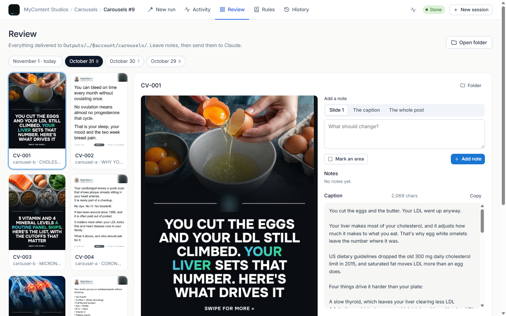</div>
  </div>
</section>

<section id="problem">
  <div class="wrap">
    <div class="head">
      <p class="eyebrow">The problem</p>
      <h2>Six automations, six terminals, one tired operator.</h2>
      <p class="lede">The content engine behind a health creator and their company runs on Claude Code playbooks: one folder per format, each with its own CLAUDE.md, render tools and output path. It worked, but every day meant juggling terminal windows and hunting through folders to see what was finished.</p>
    </div>
    <div class="problem">
      <div class="before">
        <h3>Before</h3>
        <ul>
          <li>A terminal per pipeline, opened in the right folder by hand</li>
          <li>Typing "generate 3 posts for October 31" from memory, with the date right</li>
          <li>Scrolling raw tool output to guess how far a render got</li>
          <li>Feedback lost in chat: "slide 4 of CV-002, the headline is too long"</li>
          <li>Standing rules ("never do X again") edited into playbooks by hand</li>
        </ul>
      </div>
      <div class="after">
        <h3>With the studio</h3>
        <ul>
          <li>One launcher on localhost:4300, a session per browser tab</li>
          <li>A guided form that writes the exact command and shows where it runs and delivers</li>
          <li>Named pipeline steps with times, a progress bar and a readable live log</li>
          <li>Notes pinned to a slide, a marked area, the caption or the whole post, sent back in one job</li>
          <li>A Rules tab that writes the rule into the playbook, shows the diff, and can Undo</li>
        </ul>
      </div>
    </div>
    <div class="who">
      <div><h3>The operator</h3><p>Runs the daily batch, reviews every post and reel, and sends fixes. Knows the brand; doesn't want to babysit a terminal.</p></div>
      <div><h3>The playbooks</h3><p>Each pipeline's CLAUDE.md still rules. The studio starts headless <span class="mono">claude -p</span> in that folder, so a run behaves exactly like a terminal session.</p></div>
      <div><h3>The upload</h3><p>Everything lands in one <span class="mono">Outputs/&lt;Month&gt;/&lt;Month D&gt;/</span> tree that goes to Google Drive as it is. App data never mixes in.</p></div>
    </div>
    <div class="pipes" aria-label="The six pipelines">
      <div class="pipe"><span class="ico t-blue"><svg viewBox="0 0 24 24"><path d="m12 2 10 5-10 5L2 7Z"/><path d="m2 17 10 5 10-5"/><path d="m2 12 10 5 10-5"/></svg></span><h3>Carousels</h3><p>Tweet-style carousels: copy, covers, slides and captions.</p><span class="out">carousels/CV-00N/</span></div>
      <div class="pipe"><span class="ico t-or"><svg viewBox="0 0 24 24"><rect x="9" y="2" width="6" height="12" rx="3"/><path d="M19 10v1a7 7 0 0 1-14 0v-1"/><path d="M12 18v4"/></svg></span><h3>Talking reels</h3><p>Talking-head clips edited into finished reels, with the Style Studio for the look.</p><span class="out">talking reels/Video N/</span></div>
      <div class="pipe"><span class="ico t-vi"><svg viewBox="0 0 24 24"><rect width="20" height="14" x="2" y="3" rx="2"/><path d="M8 21h8M12 17v4"/><path d="m10 7 5 3-5 3Z"/></svg></span><h3>Website reels</h3><p>Cinematic 9:16 promos for the brand site, with client proof.</p><span class="out">promotional reels/Video N/</span></div>
      <div class="pipe"><span class="ico t-red"><svg viewBox="0 0 24 24"><path d="M19 14c1.49-1.46 3-3.21 3-5.5A5.5 5.5 0 0 0 16.5 3c-1.76 0-3 .5-4.5 2-1.5-1.5-2.74-2-4.5-2A5.5 5.5 0 0 0 2 8.5c0 2.3 1.5 4.05 3 5.5l7 7Z"/></svg></span><h3>Topic reels</h3><p>One health issue (Hashimoto's, PCOS, gut) and what we do for it, with a matched testimonial.</p><span class="out">promotional reels/Video N/</span></div>
      <div class="pipe"><span class="ico t-am"><svg viewBox="0 0 24 24"><path d="M7.9 20A9 9 0 1 0 4 16.1L2 22Z"/></svg></span><h3>DM notices</h3><p>The "we can't message you first" 2-slide notice, a new concept each time.</p><span class="out">dm notices/DM-00N/</span></div>
      <div class="pipe"><span class="ico t-em"><svg viewBox="0 0 24 24"><rect x="4" y="2" width="16" height="20" rx="2"/><path d="M9 22v-4h6v4M8 6h.01M16 6h.01M12 6h.01M12 10h.01M12 14h.01M16 10h.01M16 14h.01M8 10h.01M8 14h.01"/></svg></span><h3>Company carousels</h3><p>Company carousels posted from @diegoreyeshealth with @completevitalitylife as collaborator.</p><span class="out">company carousels/CVL-00N/</span></div>
    </div>
  </div>
</section>

<section id="features" style="padding-top:0">
  <div class="wrap">
    <div class="head">
      <p class="eyebrow">Key features</p>
      <h2>Built around a day of content, not a chat window.</h2>
    </div>

    <article class="feature">
      <div class="copy">
        <p class="eyebrow">Launcher</p>
        <h3>A calendar that knows what shipped</h3>
        <p>The home screen is a month calendar. Each day carries a coloured count per pipeline, and a red ring flags a day whose last run needs a look. Pick a day and its delivered folder opens beside the calendar.</p>
        <ul><li>"2/3 = 2 of 3 have a caption" style readiness counts</li><li>Day folder with Open in Explorer and Full view</li><li>Recent sessions listed below with Ready and Done states</li></ul>
      </div>
      <div class="frame"><div class="chrome"><i></i><i></i><i></i><span>localhost:4300</span></div>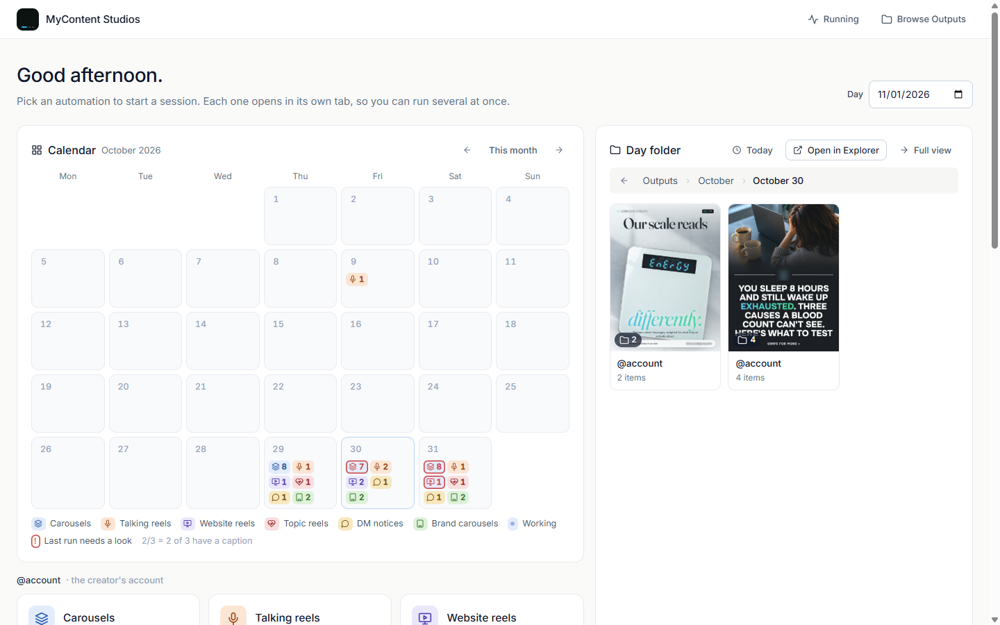</div>
    </article>

    <article class="feature flip">
      <div class="copy">
        <p class="eyebrow">New run</p>
        <h3>A form that writes the command for you</h3>
        <p>Guided mode asks only what the pipeline needs (how many, topics, posting day, a brief with dropped screenshots or a reference video) and previews exactly what Claude gets.</p>
        <div class="quote">generate 3 posts</div>
        <ul><li>Shows the folder it runs in and the Outputs path it delivers to</li><li>Posting day: today, or up to 60 days ahead</li><li>"Nobody needs to watch: Claude won't stop to ask questions."</li></ul>
      </div>
      <div class="frame"><div class="chrome"><i></i><i></i><i></i><span>localhost:4300/s/…?tab=create</span></div>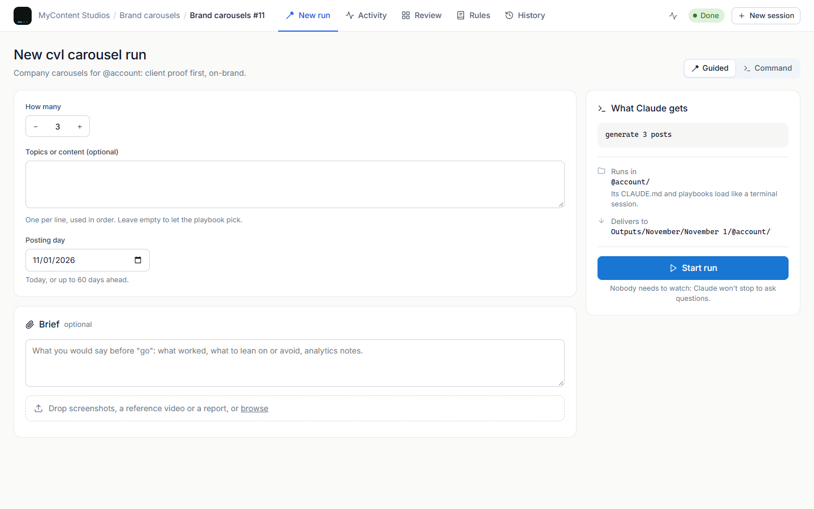</div>
    </article>

    <article class="feature">
      <div class="copy">
        <p class="eyebrow">Review</p>
        <h3>Notes that point at the exact pixel</h3>
        <p>Every delivered post, grouped by day. Open one to page through the slides and read the caption with its character count. Add a note to Slide 1, the caption or the whole post, or mark an area on the slide.</p>
        <ul><li>"Send to Claude" fixes one item, or all of a day's open notes in one job</li><li>Undo last fix restores the item from a snapshot</li><li>Snapshots and notes live in the app's data folder, never in Outputs</li></ul>
      </div>
      <div class="frame"><div class="chrome"><i></i><i></i><i></i><span>localhost:4300/s/…?tab=review</span></div>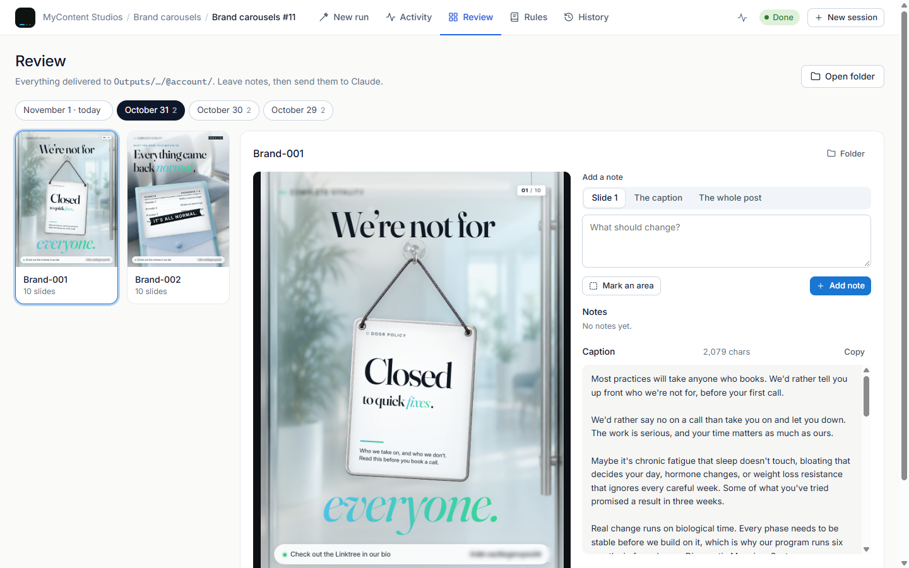</div>
    </article>

    <article class="feature flip">
      <div class="copy">
        <p class="eyebrow">Reels</p>
        <h3>Talking-head edits and promos, reviewed by the moment</h3>
        <p>Reels sit in the same Review grid. A note can point at "This moment" in the video, the caption or the whole reel, and Claude answers in the note thread. Talking reels open in the Style Studio for captions and look.</p>
        <ul><li>Talking reels: the take plus labelled graphics, like this "Digestive capacity" panel</li><li>Promo reels: client proof staged as a film, one voice at a time</li><li>Answered notes show what Claude changed and re-rendered</li></ul>
      </div>
      <div class="frame"><div class="chrome"><i></i><i></i><i></i><span>localhost:4300/s/…?tab=review</span></div>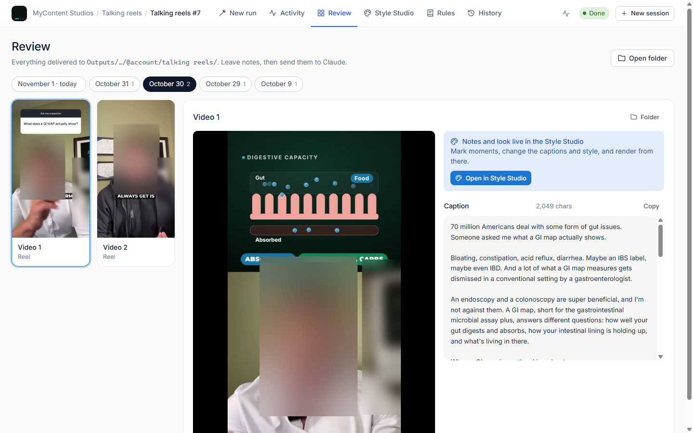</div>
    </article>

    <article class="feature">
      <div class="copy">
        <p class="eyebrow">Rules</p>
        <h3>"Never do that again," written into the playbook</h3>
        <p>A standing instruction goes into that pipeline's own CLAUDE.md and playbooks, or into the root file when "All pipelines" is on. Claude shows what it changed, and one click puts it back.</p>
        <div class="quote">No more than 3 testimonials on one post.</div>
        <ul><li>Lists exactly which files Claude may edit</li><li>Says "Nothing changed" and explains why when a rule is unclear</li></ul>
      </div>
      <div class="frame"><div class="chrome"><i></i><i></i><i></i><span>localhost:4300/s/…?tab=rules</span></div>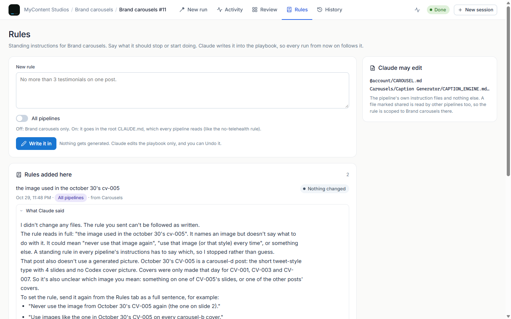</div>
    </article>
  </div>
</section>

<section class="band" id="live">
  <div class="wrap band-grid">
    <div>
      <p class="eyebrow">Activity · the one dark surface</p>
      <h2 style="margin-top:14px">Watch the run, not the raw output.</h2>
      <p class="lede" style="margin-top:14px">Each tool call becomes a readable line: Reading, Editing, Rendering, Looking at. Calls are matched to the pipeline's named steps, so progress only moves forward and every step gets a timestamp. You can message Claude mid-run and the follow-up continues the same conversation.</p>
      <ul class="steps" aria-label="Pipeline steps of a Brand carousels run">
        <li>Read the brief<span>18:50</span></li>
        <li>Build slides<span>18:52</span></li>
        <li>Caption<span>19:04</span></li>
        <li>Log the concept<span>19:08</span></li>
      </ul>
      <div class="statrow"><div><span>Elapsed</span><b>18m 12s</b></div><div><span>Actions</span><b>96</b></div><div><span>Ready</span><b>2 / 2</b></div></div>
    </div>
    <div class="term" role="img" aria-label="Excerpt of the live log from the finished run">
      <div class="tb"><i></i><i></i><i></i><span>claude — brand carousels</span></div>
      <div class="log">
        <div><span class="t">18:50:45</span><span class="k">›</span><span>Reading CAROUSEL.md</span></div>
        <div><span class="t">18:52:10</span><span class="k">›</span><span>Writing build-cvl-o31-door-policy.js</span></div>
        <div><span class="t">18:58:31</span><span class="k">›</span><span><span class="k">Rendering</span> 10 slides · 1080×1440</span></div>
        <div><span class="t">19:04:02</span><span class="k">›</span><span>Running check_caption.ps1 -Account cvl</span></div>
        <div><span class="t">19:08:50</span><span class="k">›</span><span>Both posts delivered: 10 slides and a caption each.</span></div>
        <div><span class="t">19:08:58</span><span class="ok">✓</span><span class="ok">Finished</span></div>
      </div>
    </div>
  </div>
</section>

<section id="flow">
  <div class="wrap">
    <div class="head">
      <p class="eyebrow">User flow</p>
      <h2>From "go" to Drive in five steps.</h2>
    </div>
    <ol class="flow">
      <li><b>Pick a pipeline</b><p>On the launcher, choose one of six cards. It opens a session in its own tab, so several run at once.</p></li>
      <li><b>Set the run</b><p>Count, topics, posting day, an optional brief. The form writes <code>generate 3 posts</code>.</p></li>
      <li><b>Start and leave</b><p>Headless Claude Code runs in the pipeline's folder. A second job in a busy pipeline asks: run alongside or queue after.</p></li>
      <li><b>Review and note</b><p>Page through slides or reels, pin notes, then Send to Claude. Undo if a fix misses.</p></li>
      <li><b>Upload the day</b><p>The day's folder in <code>Outputs/</code> holds only deliverables and goes to Google Drive as it is.</p></li>
    </ol>
  </div>
</section>

<section id="screens" style="padding-top:0">
  <div class="wrap">
    <div class="head">
      <p class="eyebrow">Screens</p>
      <h2>Gallery</h2>
      <p class="lede">Captured from the running app on Nov 1, 2026, with the real content. Faces, logos, names, handles, links and QR codes are blurred inside the slides and reel frames, and account names in the interface read "@account".</p>
    </div>
    <div class="gallery">
      <figure class="g-a g-tall"><div class="frame"><div class="chrome"><i></i><i></i><i></i><span>localhost:4300</span></div>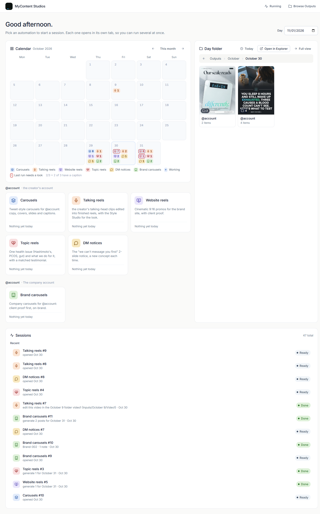</div><figcaption><b>Launcher, full page.</b> Calendar, day folder, the six pipeline cards grouped by account, and recent sessions.</figcaption></figure>
      <figure class="g-b"><div class="frame"><div class="chrome"><i></i><i></i><i></i><span>…?tab=review</span></div>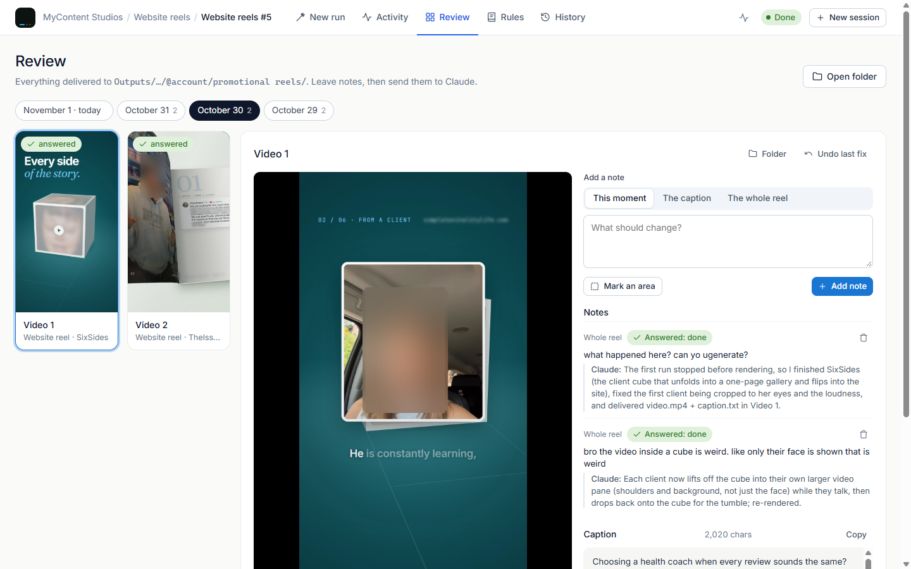</div><figcaption><b>Review, promo reels.</b> A client-proof film, with notes Claude has answered and fixed.</figcaption></figure>
      <figure class="g-c"><div class="frame"><div class="chrome"><i></i><i></i><i></i><span>…?tab=create</span></div>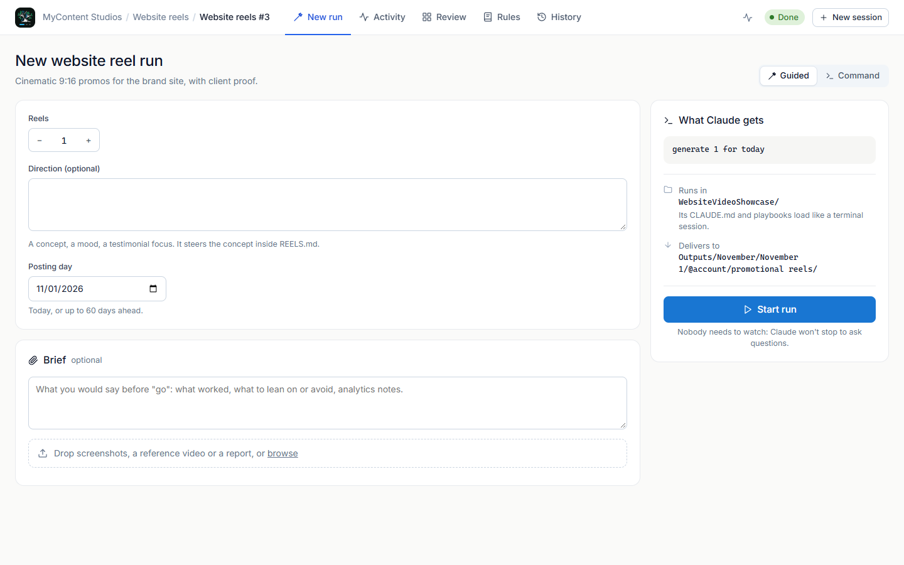</div><figcaption><b>New run, website reels.</b> Same form, pipeline-specific fields: Reels and Direction.</figcaption></figure>
      <figure class="g-b"><div class="frame"><div class="chrome"><i></i><i></i><i></i><span>…?tab=activity</span></div>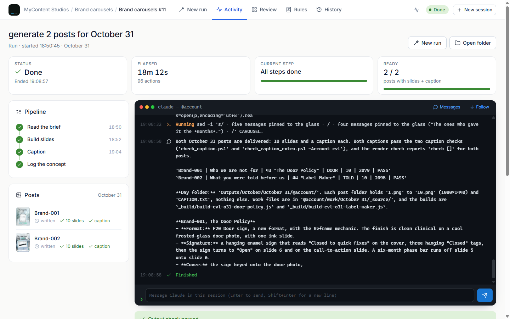</div><figcaption><b>Activity.</b> Status, elapsed time, current step and ready count above the live log.</figcaption></figure>
      <figure class="g-c"><div class="frame"><div class="chrome"><i></i><i></i><i></i><span>…?tab=history</span></div>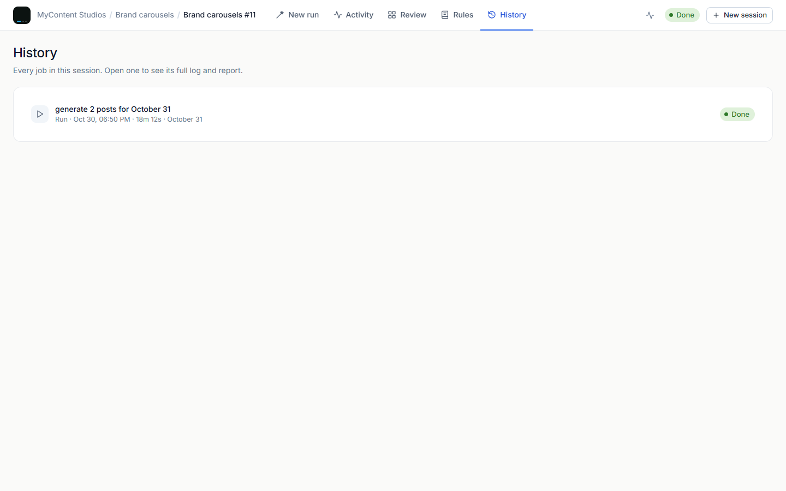</div><figcaption><b>History.</b> Every job in the session, with its full log and report.</figcaption></figure>
    </div>
  </div>
</section>

<section id="kit" style="padding-top:0">
  <div class="wrap">
    <div class="head">
      <p class="eyebrow">UI kit in context</p>
      <h2>A workspace kit, kept quiet.</h2>
      <p class="lede">White canvas, inset rows, Inter at two weights, soft-tone pills and one blue for actions. The only dark surface is the terminal, so Claude's live work stands apart from everything you control.</p>
    </div>
    <div class="kit">
      <div class="card">
        <p class="eyebrow">Colour</p>
        <div class="swatches">
          <div class="sw"><i style="background:#fafaf9"></i><b>Canvas</b>#fafaf9</div>
          <div class="sw"><i style="background:#f6f6f4"></i><b>Inset</b>#f6f6f4</div>
          <div class="sw"><i style="background:#e8eaee"></i><b>Line</b>#e8eaee</div>
          <div class="sw"><i style="background:#0f172a"></i><b>Ink</b>#0f172a</div>
          <div class="sw"><i style="background:#1976D2"></i><b>Action</b>#1976D2</div>
          <div class="sw"><i style="background:#0d1117"></i><b>Terminal</b>#0d1117</div>
        </div>
        <p class="eyebrow" style="margin-top:4px">One tone per pipeline</p>
        <div class="chips"><span class="pill t-blue">Carousels</span><span class="pill t-or">Talking</span><span class="pill t-vi">Website</span><span class="pill t-red">Topic</span><span class="pill t-am">DM</span><span class="pill t-em">Brand</span></div>
      </div>
      <div class="card">
        <p class="eyebrow">Type · Inter 400 / 500</p>
        <div class="typespec">
          <div><span>24 / 500</span><b style="font:500 24px/1.2 var(--f-body);letter-spacing:-.3px">Good afternoon.</b></div>
          <div><span>16 / 500</span><b style="font:500 16px var(--f-body)">What Claude gets</b></div>
          <div><span>14 / 400</span><p style="font-size:14px;color:var(--ink2)">Pick an automation to start a session. Each one opens in its own tab, so you can run several at once.</p></div>
          <div><span>mono</span><p class="mono" style="font-size:13px">Outputs/November/November 1/</p></div>
        </div>
      </div>
      <div class="card">
        <p class="eyebrow">Components</p>
        <div class="btns"><span class="k-btn k-primary">▷ Start run</span><span class="k-btn k-outline">Open folder</span><span class="k-btn k-ghost">Folder</span></div>
        <div class="k-seg" aria-label="Mode toggle"><span class="on">Guided</span><span>Command</span></div>
        <div class="status"><span class="pill t-em">Done</span><span class="pill t-blue">Running</span><span class="pill t-am">Queued</span><span class="pill t-red">Failed</span></div>
        <div class="radii" aria-label="Corner radii"><div><i style="border-radius:8px"></i>8 · control</div><div><i style="border-radius:10px"></i>10 · inset</div><div><i style="border-radius:14px"></i>14 · card</div></div>
      </div>
    </div>
  </div>
</section>

<section id="next" style="padding-top:0">
  <div class="wrap">
    <div class="head">
      <p class="eyebrow">What's next</p>
      <h2>Where the studio goes from here.</h2>
    </div>
    <div class="next">
      <div><span class="tag">Gap seen while capturing</span><h3>A phone layout</h3><p>At 390px the top bar overflows and the page scrolls sideways. The studio is desktop-only today, so this case study shows desktop screens only.</p></div>
      <div><span class="tag">Idea</span><h3>Reel review in the same grid</h3><p>Bring the talking-reel Style Studio and the promo reels into the same note-and-fix loop as slides, frame by frame.</p></div>
      <div><span class="tag">Idea</span><h3>Insights beside the calendar</h3><p>Show each day's post stats from the Analytics pipeline on the launcher calendar, next to what shipped.</p></div>
    </div>
  </div>
</section>
</main>

<footer>
  <div class="wrap">
    <span><b style="color:var(--ink);font-weight:500">MyContent Studios</b> · Node server on :4300, plain JS UI with no build step, headless Claude Code per run.</span>
    <span>Type: Inter. Icons: Lucide-style strokes from the app. Screens captured with Playwright.</span>
  </div>
</footer>
